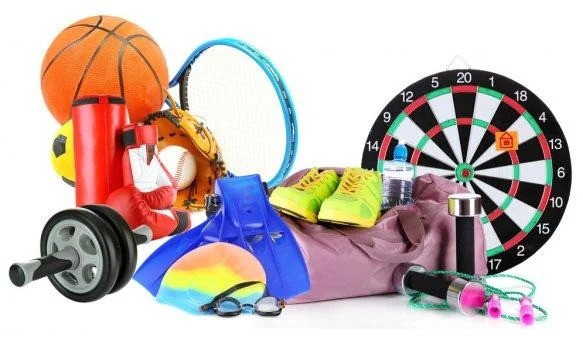

Компания Aukera Sport была создана в 1999 году и уверенно лидирует на рынке спортивных товаров в Казахстане. За годы работы мы собрали под своими знаменами ведущих производителей спортивного инвентаря, что позволяет удовлетворить запросы любого потребителя различных видов спорта, туризма и отдыха.
Для особых ценителей эксклюзивной одежды мы предлагаем элитную одежду таких известных мировых брендов как Emporio Armany EA7, Tony Sailer, Spyder, Descente, Phenix, MDC, Sportalm, Hell Is For Heroes, Poivre Blanc, отличающихся высокими технологиями и самыми новыми веяниями моды.
Магазин Aukera Sport отличает от других высокий профессионализм продавцов-консультантов, прошедших специальное обучение и специально подготовленных к каждой коллекции нового сезона, а следовательно возможность приобрести в одном месте полный ассортимент правильно подобранной экипировки и наличие в магазине лучших спортивных товаров и одежды. Индивидуальный подход к каждому клиенту и помощь в ориентации в огромном предложении по спортивному и туристическому снаряжению – это для нас самое главное.
Aukera Sport тесно сотрудничает с представителями многих известных торговых марок и предлагает широкий выбор в следующих областях спортивных товаров:
- горные лыжи;
- горные лыжи;
- беговые лыжи;
- сноуборд;
- коньки;
- санки;
- очки;
- шлемы;
- аксессуары для зимних видов спорта;
- теннис;
- бадминтон;
- велосипеды;
- плавание;
- палатки;
- спальники;
- товары для туризма;
- виндсерфинг;
- кайтсерфинг;
- одежда для всех видов спорта;
- обувь для всех видов спорта.